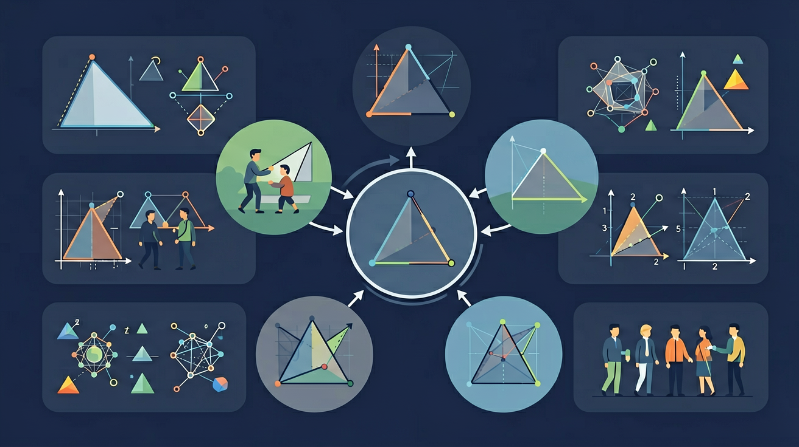

🎯 能说出三角形和四边形的定义及特征
🎯 能判断给定图形是否属于特定三角形或四边形
🎯 能计算简单组合图形中三角形和四边形的数量
❓ 为什么三角形比四边形更稳当？
❓ 平行四边形为啥能变形而长方形不行？
❓ 我家地砖为啥都是四边形不是三角形？
学完这一课，这些问题你都能自信地回答。
在学习新内容之前，先测测你的基础知识！
Q1：三角形三个内角之和是多少度？
Q2：平行四边形有什么特点？
🏗️ 建筑师用三角形和四边形建造稳固结构！
🔺 三角形因其稳定性，被广泛用于桥梁和屋顶设计。四边形用于窗户、地板等。
用给定的三角形和四边形瓷砖设计无缝拼接图案
由三条边、三个角组成的封闭图形。
按角分类：
锐角三角形（三角都 <90°）
直角三角形（有一角=90°）
钝角三角形（有一角 >90°）
由四条边、四个角组成的封闭图形。
常见四边形：正方形、长方形、平行四边形、梯形、菱形
| 分类方式 | 类型 | 条件 |
|---|---|---|
| 按角度分 | 锐角三角形 | 三个角都小于90° |
| 直角三角形 | 有一个角等于90° | |
| 钝角三角形 | 有一个角大于90° | |
| 按边长分 | 等边三角形 | 三边相等（=等角三角形） |
| 等腰三角形 | 两边相等 | |
| 不等边三角形 | 三边各不相等 |
⚠️ 如果你做错了，看看错在哪里：
如果你认为1+2>4所以能组成三角形（错！1+2=3<4），你忘记了三角形三边关系：任意两边之和必须大于第三边，等于都不行。
💡 自查方法：把答案代回原题验证，如果算出矛盾就说明中间有错误！
💡 背后的原理
🔍 本质：三角形内角和=180°是欧式几何的基本定理。四边形内角和=360°（因为可以分成2个三角形）。任意多边形内角和=(n-2)×180°。
回忆：今天学了哪些关键词和规则？试着说出来。
用自己的话解释今天学的核心概念，不看书能说清楚吗？
用今天的知识解决一个实际问题，或写一个新例子。
把今天的知识与已有知识联系起来：有什么共同点？有什么区别？能不能自己创造一道新题？
调整前两个角，第三个角自动计算，内角和始终为180°
三角形和四边形完全掌握！
先独立作答，再点选项查看对错与错因。
园艺社发现一块瓷砖的三个角分别是90°、45°、45°，这是
下列哪组图形一定能拼成四边形？
花坛设计图中标记了四根首尾相连的线段，且两组对边分别平行，这个形状是
三角形按角分类可分为____三角形、____三角形和____三角形
答案：锐角,直角,钝角
根据最大内角度数分为三类
两组对边分别平行的四边形叫____，只有一组对边平行的四边形叫____
答案：平行四边形,梯形
根据平行边的组数区分
完成学习后，用这两道题检验你的掌握程度！
Q1：等腰三角形两个底角各60°，顶角是多少度？
Q2：下面哪个不是平行四边形的特例？
✅ 演示固定长方形框架的不可变性
💡 混淆一般四边形与特殊四边形的性质
✅ 用数边儿歌强化边数记忆
💡 视觉上把凹五边形误认为四边形
记忆口诀：三角形内角和=180°；四边形内角和=360°。助记：四边形=两个三角形（对角连线），所以360°=2×180°。三角形分类口诀："锐角三角形全锐，直角三角形一直，钝角三角形一钝。"四边形家族树：平行四边形→长方形、菱形→正方形。